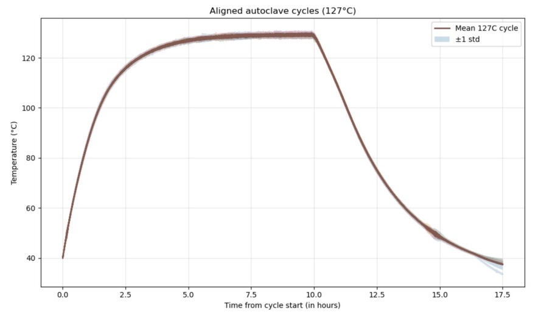
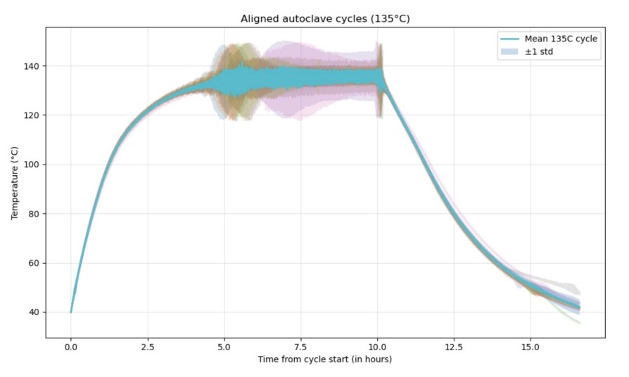

Overview
Understanding a real thermal system
This work was developed as a technical submission connected to research and fabrication work in the Harvard Kovac CMB lab. The project centered on understanding temperature measurement in a small autoclave system used in the production of AR coatings.
Even though the submission itself was concise, the project represents an important kind of engineering and research work: using physics-based reasoning to better understand a real experimental system and the reliability of its measurements.
Problem
Why temperature interpretation matters
Accurate temperature interpretation is important when working with fabrication systems, especially when process conditions can affect the quality and consistency of the final result. In this case, the project focused on understanding how to interpret the behavior and limitations of a small thermometer associated with the autoclave system.
Approach
Questions guiding the analysis
This section can be expanded with details from the full report. Useful points to include are the questions you were trying to answer, the assumptions or approximations you made, and whether expected behavior was compared with observed thermal behavior.
- What thermal behavior was expected during the cycle?
- How consistent were repeated autoclave runs?
- Where did the system appear most stable or least stable?
- What did the measurements suggest about instrument limitations?
Findings
Cycle behavior and relevance
The aligned cycle plots show the heating, hold, and cooling behavior for both programs. The 127°C cycles are tightly grouped, indicating consistent behavior across runs. In contrast, the 135°C cycles show more spread during the hold region, along with visibly higher noise.
Interpretation: the system appears less stable at the higher setpoint, particularly during steady-state operation.
Figures
Thermal cycle plots


Full Report: View Full Analysis PDF →
Reflection
What I learned
This project strengthened my interest in instrumentation, thermal systems, and the practical interpretation of measurements in laboratory settings. It also reinforced how important it is to connect theory with the realities of how devices behave in practice.